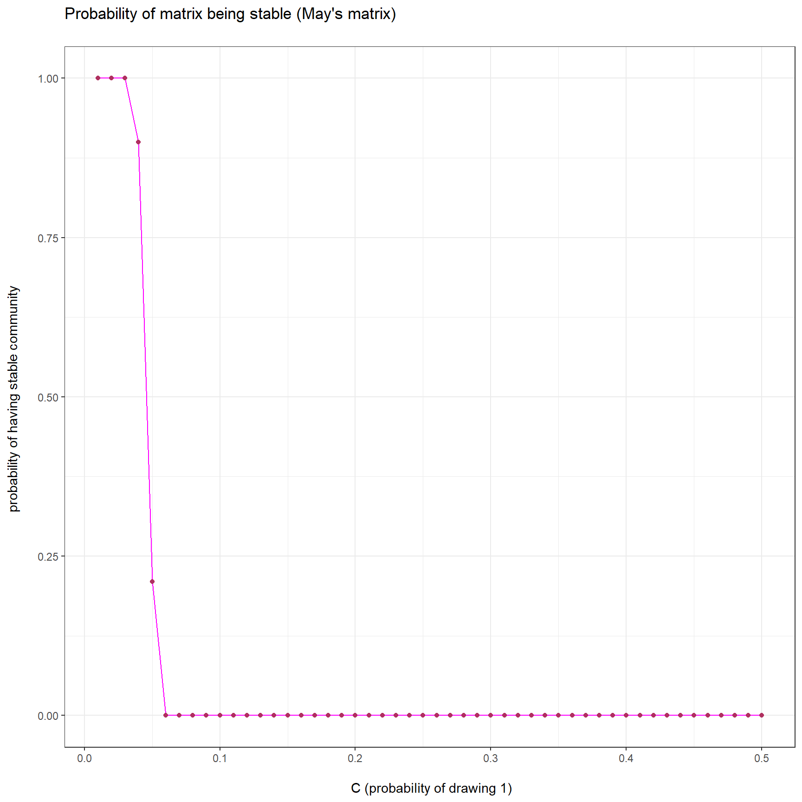
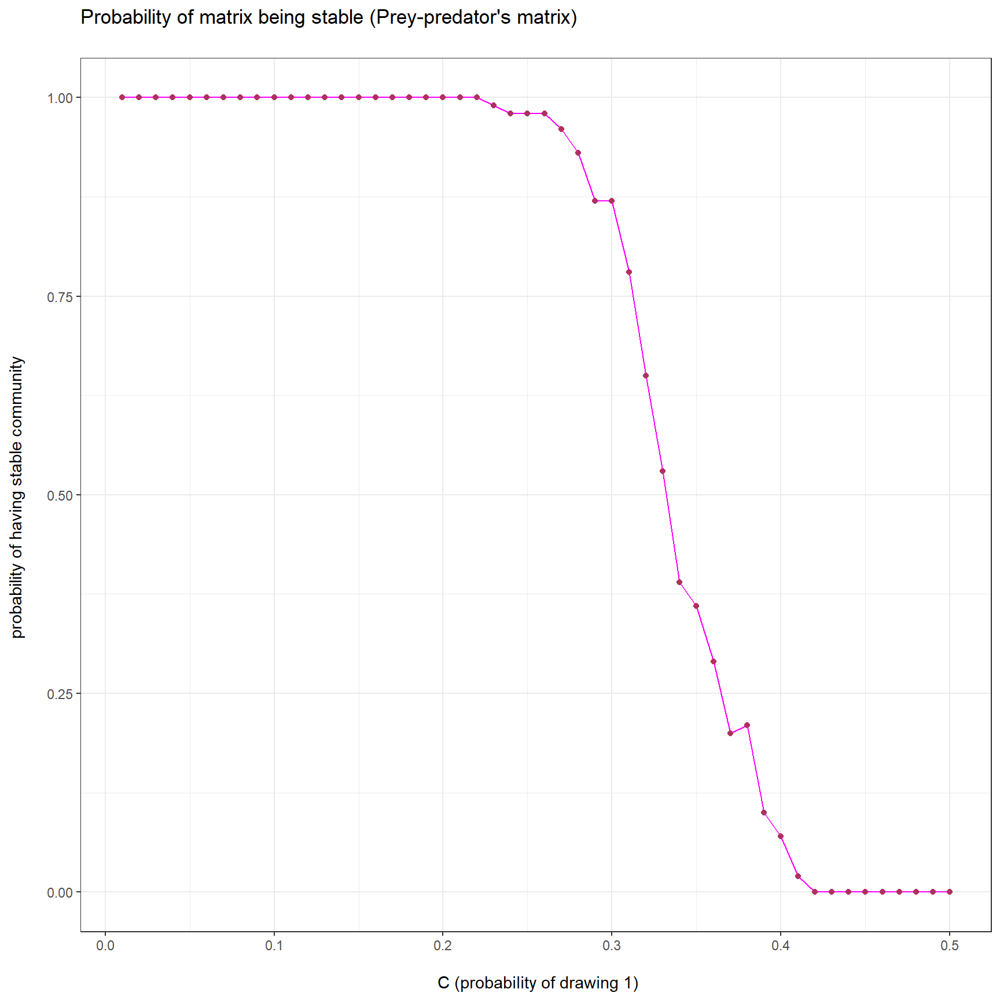

Last updated: 2021-02-02
Checks: 7 0
Knit directory: Theoretical_ecology_HW/
This reproducible R Markdown analysis was created with workflowr (version 1.6.2). The Checks tab describes the reproducibility checks that were applied when the results were created. The Past versions tab lists the development history.
Great! Since the R Markdown file has been committed to the Git repository, you know the exact version of the code that produced these results.
Great job! The global environment was empty. Objects defined in the global environment can affect the analysis in your R Markdown file in unknown ways. For reproduciblity it’s best to always run the code in an empty environment.
The command set.seed(20210122) was run prior to running the code in the R Markdown file. Setting a seed ensures that any results that rely on randomness, e.g. subsampling or permutations, are reproducible.
Great job! Recording the operating system, R version, and package versions is critical for reproducibility.
Nice! There were no cached chunks for this analysis, so you can be confident that you successfully produced the results during this run.
Great job! Using relative paths to the files within your workflowr project makes it easier to run your code on other machines.
Great! You are using Git for version control. Tracking code development and connecting the code version to the results is critical for reproducibility.
The results in this page were generated with repository version 8d956a5. See the Past versions tab to see a history of the changes made to the R Markdown and HTML files.
Note that you need to be careful to ensure that all relevant files for the analysis have been committed to Git prior to generating the results (you can use wflow_publish or wflow_git_commit). workflowr only checks the R Markdown file, but you know if there are other scripts or data files that it depends on. Below is the status of the Git repository when the results were generated:
Ignored files:
Ignored: .Rhistory
Ignored: .Rproj.user/
Unstaged changes:
Modified: analysis/index.Rmd
Note that any generated files, e.g. HTML, png, CSS, etc., are not included in this status report because it is ok for generated content to have uncommitted changes.
These are the previous versions of the repository in which changes were made to the R Markdown (analysis/Homework3.Rmd) and HTML (docs/Homework3.html) files. If you’ve configured a remote Git repository (see ?wflow_git_remote), click on the hyperlinks in the table below to view the files as they were in that past version.
| File | Version | Author | Date | Message |
|---|---|---|---|---|
| Rmd | 8d956a5 | KiseokUChicago | 2021-02-02 | Homework3 |
| html | 8aa8fe1 | KiseokUChicago | 2021-02-02 | Build site. |
| Rmd | c405204 | KiseokUChicago | 2021-02-02 | Homework3 |
Professor: Sarah Cobey, Greg Dwyer
Student: Kiseok Lee
## Community_matrices.R
## Stefano Allesina and Sarah Cobey
## Code for Theoretical Ecology
MayMatrix<-function(S,C,sigma){
## This matrix determines the connections
A<-matrix(runif(S*S),S,S)
## Contains the values for the connections
B<-matrix(rnorm(S*S,0.0,sigma),S,S)
A<-(A<= C)*1 # A matrix contains 1 when A[i,j] <= C
M<-A*B
diag(M)<- -1
return(M)
}
PPMatrix<-function(S,C,sigma){
## Determine the signs for the connections
MyS<-sign(rnorm(S*(S-1)/2))
A<-matrix(0,S,S)
A[upper.tri(A,diag=F)]<-MyS
D<-matrix(runif(S*S),S,S)
D<-(D <= C)*1
A<-D*A
A<- A-t(A)
## Contains the values for the connections
B<-matrix(abs(rnorm(S*S,0.0,sigma)),S,S)
M<-A*B
diag(M)<- -1
return(M)
}For S = 250, sigma = 0.3, and C between 0.01 and 0.5, compute the probability of observing a stable random matrix. To estimate the value, simulate at least 100 matrices for each level of C. Draw a profile of C vs. the probability of stability for the two cases.
library(schoolmath)
# Testing with May matrix
# MayMatrix(S=250, 0.01, sigma=0.3)
# Getting eigenvalues
eig_valu_es <- eigen(MayMatrix(S=250, 0.01, sigma=0.3), only.values = T)$values
# Real part of the complex number (eigen value)
Re(eig_values)Error in eval(expr, envir, enclos): object 'eig_values' not found# are all real part of the eigenvalues negative?
all(is.negative(Re(eig_values))) # all negative eigenvalues indicate stableError in is.negative(Re(eig_values)): object 'eig_values' not found# Getting probabilities for May's matrix
df_c_may <- data.frame(C=NA, prob=NA)
for (C in seq(0.01, 0.5, by=0.01)){ # 0.01, 0.02, 0.03,...., 0.50
counter=0
for (i in c(1:100)){
# get the eigenvalues of the community matrix
eig_values <- eigen(MayMatrix(S=250, C, sigma=0.3), only.values = T)$values
# real part of the complex number
Re(eig_values)
# negative eigenvalue
if(all(is.negative(Re(eig_values)))){ # all negative eigenvalues indicate stable community
counter = counter +1
}
}
df_c_may <- rbind(df_c_may, c(C, counter/100))
}
df_c_may1 <- df_c_may[-1,]
library(ggplot2)
p1 <- ggplot(df_c_may1,aes(x = C,y = prob)) + geom_line(col="magenta") + geom_point(color='maroon') + theme_bw() +
labs(title="Probability of matrix being stable (May's matrix) \n", x="\n C (probability of drawing 1)",y="probability of having stable community \n")
p1
Threshold of C for May’s case is 0.04. After 0.04, probability of the community matrix being stable plummets.
# May's critical value
# C = ((1/sigma)^2 ) / S
(1/0.3)^2 / 250[1] 0.04444444May’s theorem produces critical C value of 0.044. This is very close to value of 0.04 from the simulation.
For S = 250, sigma = 0.3, and C between 0.01 and 0.5, compute the probability of observing a stable predator-prey matrix. To estimate the value, simulate at least 100 matrices for each level of C. Draw a profile of C vs. the probability of stability for the two cases.
# Getting probabilities for Prey-predator's matrix
df_c_pp <- data.frame(C=NA, prob=NA)
for (C in seq(0.01, 0.5, by=0.01)){
counter=0
for (i in c(1:100)){
# get the eigenvalues of the community matrix
eig_values <- eigen(PPMatrix(S=250, C, sigma=0.3), only.values = T)$values
# real part of the complex number
Re(eig_values)
# negative eigenvalue
if(all(is.negative(Re(eig_values)))){ # all negative eigenvalues indicate stable community
counter = counter +1
}
}
df_c_pp <- rbind(df_c_pp, c(C, counter/100))
}
df_c_pp1 <- df_c_pp[-1,]
library(ggplot2)
p2 <- ggplot(df_c_pp1,aes(x = C,y = prob)) + geom_line(col="magenta") + geom_point(color='maroon') + theme_bw() +
labs(title="Probability of matrix being stable (Prey-predator's matrix) \n", x="\n C (probability of drawing 1)",y="probability of having stable community \n")
p2
Threshold of C for Allesina & Pascual’s case is between 0.25 to 0.35. Gradually after 0.25, probability of the community matrix being stable plummets.
sessionInfo()R version 4.0.3 (2020-10-10)
Platform: x86_64-w64-mingw32/x64 (64-bit)
Running under: Windows 10 x64 (build 19042)
Matrix products: default
locale:
[1] LC_COLLATE=English_United States.1252
[2] LC_CTYPE=English_United States.1252
[3] LC_MONETARY=English_United States.1252
[4] LC_NUMERIC=C
[5] LC_TIME=English_United States.1252
attached base packages:
[1] stats graphics grDevices utils datasets methods base
other attached packages:
[1] ggplot2_3.3.3 schoolmath_0.4 workflowr_1.6.2
loaded via a namespace (and not attached):
[1] Rcpp_1.0.5 highr_0.8 pillar_1.4.7 compiler_4.0.3
[5] later_1.1.0.1 git2r_0.27.1 tools_4.0.3 digest_0.6.27
[9] evaluate_0.14 lifecycle_0.2.0 tibble_3.0.4 gtable_0.3.0
[13] pkgconfig_2.0.3 rlang_0.4.10 rstudioapi_0.13 yaml_2.2.1
[17] xfun_0.20 withr_2.4.1 stringr_1.4.0 dplyr_1.0.2
[21] knitr_1.31 generics_0.1.0 fs_1.5.0 vctrs_0.3.6
[25] tidyselect_1.1.0 rprojroot_2.0.2 grid_4.0.3 glue_1.4.2
[29] R6_2.5.0 rmarkdown_2.6 farver_2.0.3 purrr_0.3.4
[33] magrittr_2.0.1 whisker_0.4 scales_1.1.1 promises_1.1.1
[37] ellipsis_0.3.1 htmltools_0.5.0 colorspace_2.0-0 httpuv_1.5.4
[41] labeling_0.4.2 stringi_1.5.3 munsell_0.5.0 crayon_1.3.4